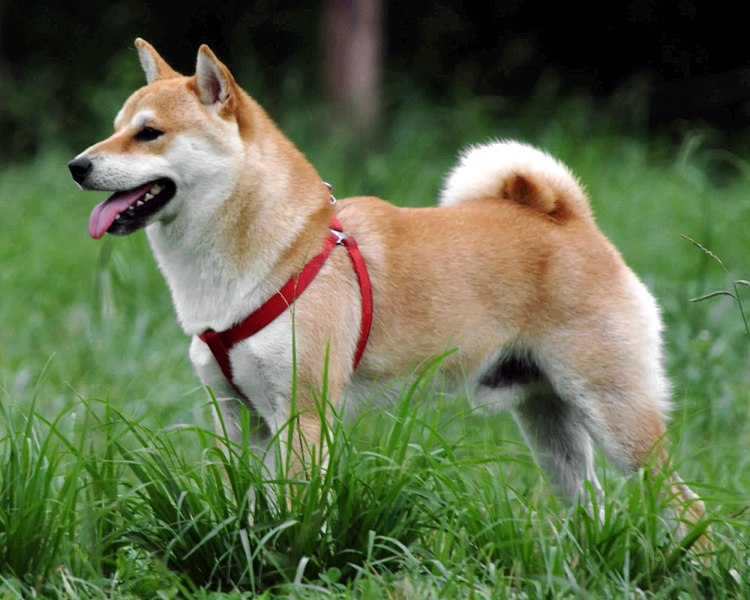
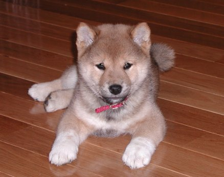
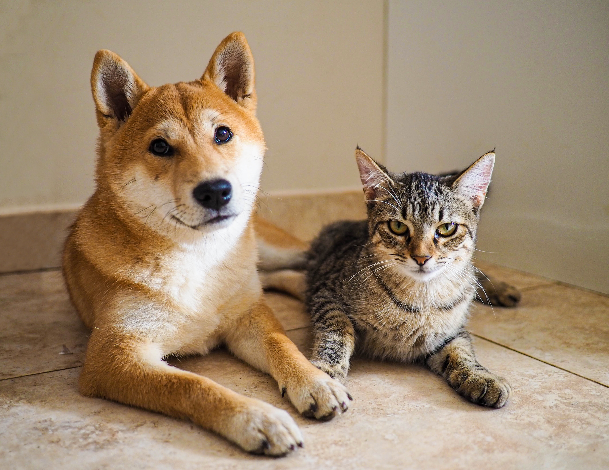
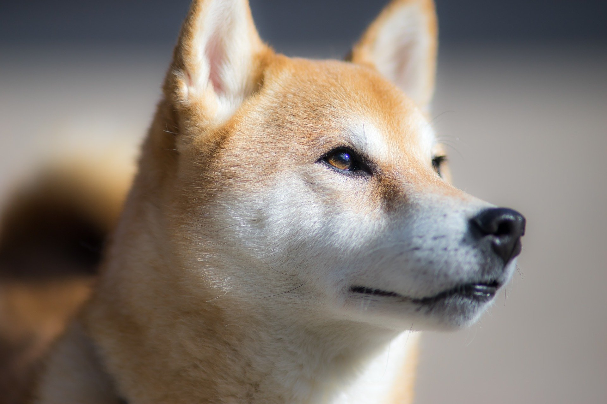
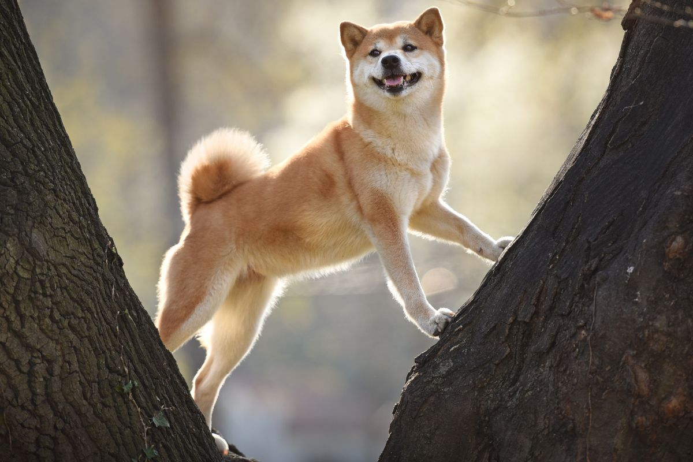
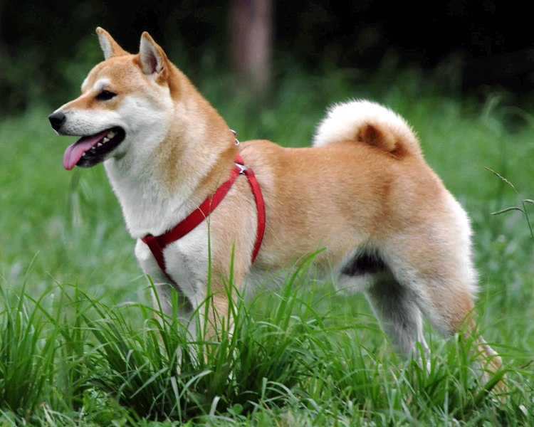
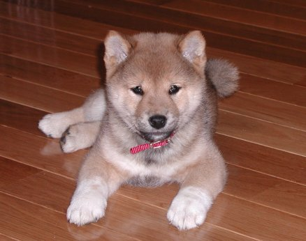
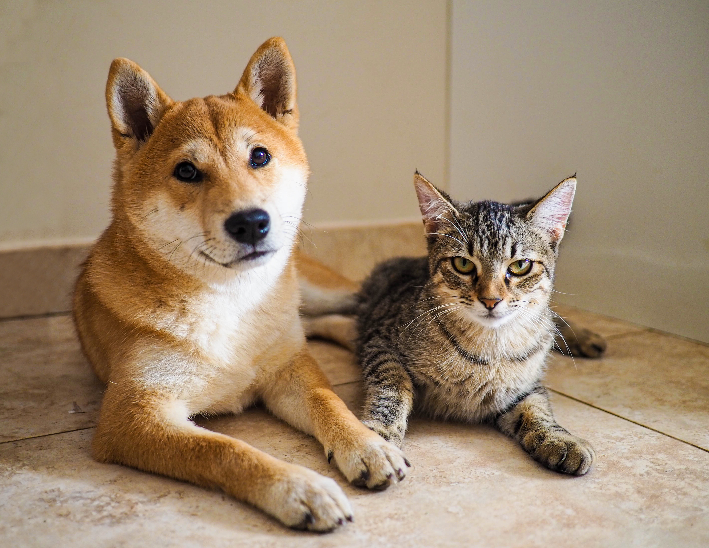
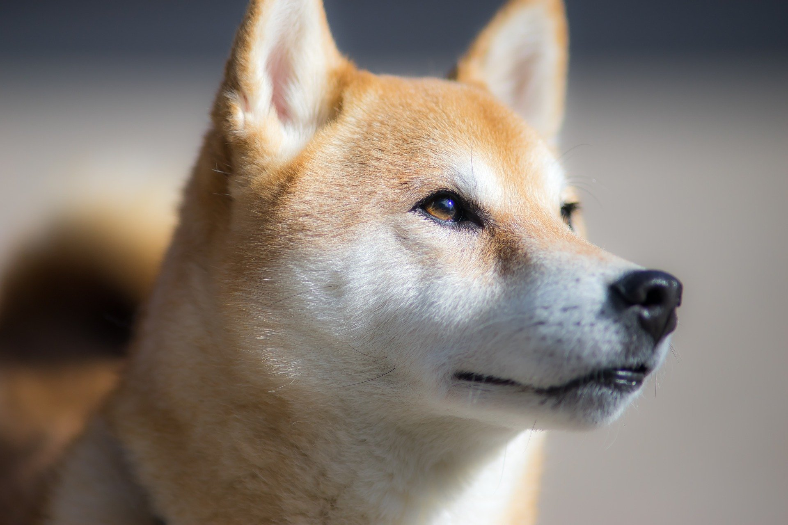
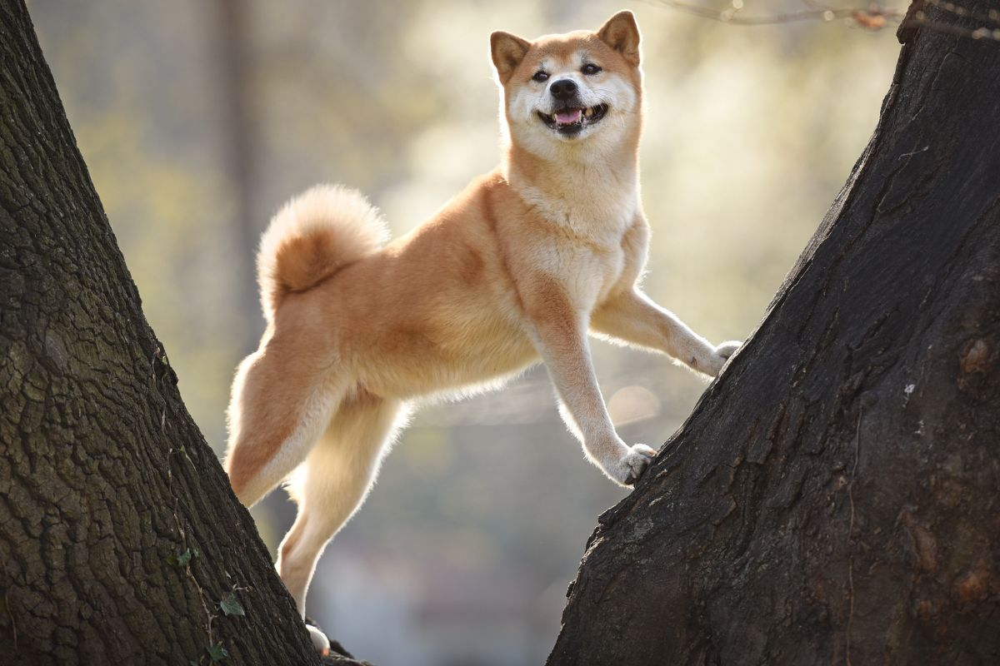

Shiba-Inu
O plemenu
Shiba Inu je japonské plemeno psa, které je velmi populární v Japonsku a v posledních letech také stále více oblíbené po celém světě. Tento pes je velmi inteligentní a vytrvalý, což ho činí skvělým společníkem pro sportovní aktivity, jako je například agility nebo canicross. Shiba Inu je také velmi houževnatý a nezávislý pes, což je důvod, proč se hodí pro zkušené psovody. Shiba Inu má kompaktní tělo a silnou muskulaturu, což mu umožňuje být velmi pohyblivý a rychlý. Tento pes má krátkou, hustou srst, která může být různých barev, nejčastěji se vyskytuje červená, černá nebo hnědá. Shiba Inu má také charakteristický ocas, který má tendenci se zvedat nad hřbetem, což mu dodává výrazný vzhled. Tento pes je velmi loajální svému pánovi a jeho rodině a je velmi pečlivý ohledně svého teritoria. Shiba Inu má silné lovecké instinkty, takže je důležité ho vychovat a socializovat od útlého věku. Shiba Inu se také velmi dobře hodí jako společník pro aktivní jedince nebo rodiny, kteří hledají energického a inteligentního psa. Jelikož jsou shiba inu velmi nezávislé, tak je potřeba pečlivě zvažovat, zda je to pro vás vhodné plemeno. Je nutné trávit s ním čas na výcviku a sociálním učení od útlého věku aby se stal poslušným a bezproblémovým společníkem. Navíc je třeba brát v úvahu, že se jedná o plemeno, které potřebuje hodně pohybu a bude se mu lépe dařit v rodině s dostatkem volného času.
Vzhled
Shiba Inu má kompaktní tělo a silnou muskulaturu, což mu umožňuje být velmi pohyblivý a rychlý. Tento pes má krátkou, hustou srst, která může být různých barev, nejčastěji se vyskytuje červená, černá nebo hnědá. Shiba Inu má také charakteristický ocas, který má tendenci se zvedat nad hřbetem, což mu dodává výrazný vzhled. Má silný, ale elegantní krk a široký hřbet. Jeho hlava je kompaktní a tvarovaná jako kosočtverec. Jeho uši jsou středně velké a tvarované jako trojúhelník. Má silné a pevné nohy a chodidla. Jeho oči jsou tmavé, inteligentní a plné života.
- Výška: Shiba Inu je malé až střední plemeno, v průměru se pohybuje v rozmezí od 35 do 42 cm.
- Váha: Hmotnost shiba inu se pohybuje v rozmezí od 8 do 10 kg.
- Srst: Shiba Inu má krátkou a hustou srst, která může být různých barev, nejčastěji se vyskytuje červená, černá nebo hnědá. Srst je snadno udržovatelná a potřebuje jen málo údržby.
- Povaha: Shiba Inu je inteligentní, houževnatý a nezávislý pes, který se hodí pro zkušené psovody. Je velmi loajální svému pánovi a jeho rodině, ale může být někdy dominantní vůči cizím lidem. Potřebuje dostatečnou sociální a výcvikovou péči, aby se stal poslušným a bezproblémovým společníkem.
- Zdraví: Shiba Inu je obecně zdravé plemeno, ale jako u všech plemen mohou být náchylní k určitým zdravotním problémům, jako jsou dysplazie kyčelního kloubu, luxace patelly nebo oční problémy.
- Životnost: Průměrná životnost shiba inu se pohybuje kolem 12-15 let.
- Aktivita: Shiba Inu je velmi aktivní a energický pes, který potřebuje dostatečnou fyzickou a mentální stimulaci. Je vhodný pro aktivní jedince nebo rodiny, kteří hledají energického a inteligentního psa.
Obrázky
 








